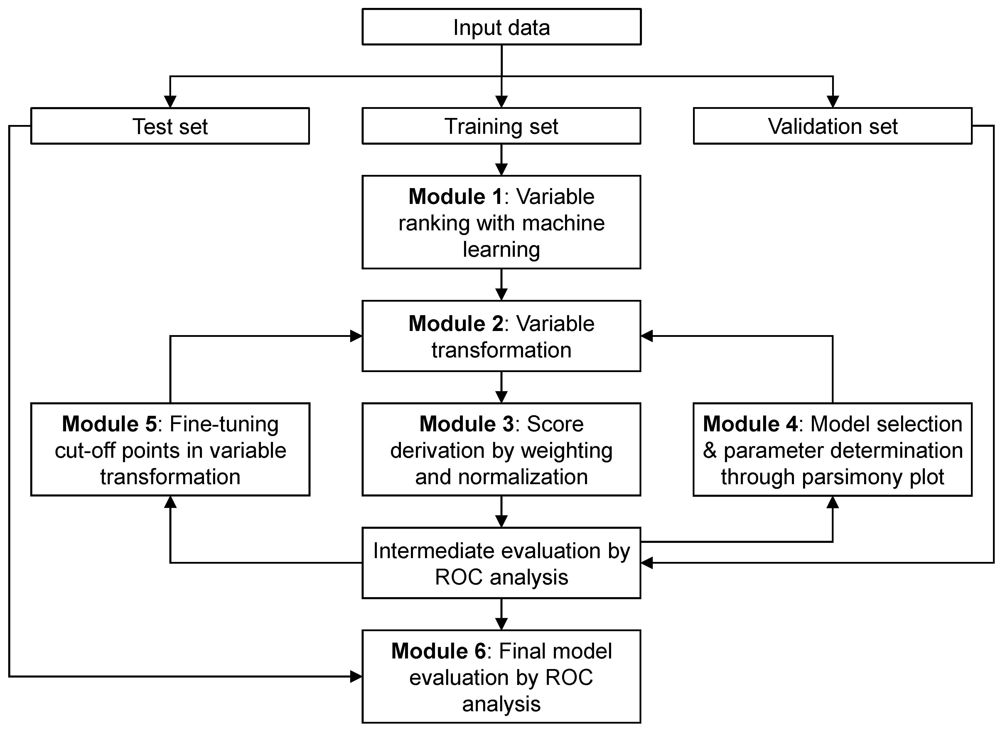

# From Github
install.packages("devtools")
library(devtools)
install_github(repo = "nliulab/AutoScore", build_vignettes = TRUE)
# From CRAN (recommended)
install.packages("AutoScore")AutoScore: An Interpretable Machine Learning-Based Automatic Clinical Score Generator
AutoScore Introduction
AutoScore is a novel machine learning framework to automate the development of interpretable clinical scoring models. AutoScore consists of six modules: 1) variable ranking with machine learning, 2) variable transformation, 3) score derivation, 4) model selection, 5) domain knowledge-based score fine-tuning, and 6) performance evaluation. The original AutoScore structure is elaborated in the article (http://dx.doi.org/10.2196/21798) and its flowchart is shown in the following figure. AutoScore was originally designed for binary outcomes and later extended to survival outcomes (http://dx.doi.org/10.1016/j.jbi.2021.103959) and ordinal outcomes (https://doi.org/10.48550/arxiv.2202.08407). AutoScore could seamlessly generate risk scores using a parsimonious set of variables for different types of clinical outcomes, which can be easily implemented and validated in clinical practice. Moreover, it enables users to build transparent and interpretable clinical scores quickly in a straightforward manner.

Usage
The five pipeline functions constitute the 5-step process for generating point-based clinical scores for binary (Chapter 4), survival (Chapter 5) and ordinal (Chapter 6) outcomes.
This 5-step process gives users the flexibility of customization (e.g., determining the final list of variables according to the parsimony plot, and fine-tuning the cutoffs in variable transformation). Please follow the step-by-step instructions (in following chapters) to build your own scores.
- STEP(i):
AutoScore_rank()orAutoScore_rank_Survival()orAutoScore_rank_Ordinal()- Rank variables with machine learning (AutoScore Module 1) - STEP(ii):
AutoScore_parsimony()orAutoScore_parsimony_Survival()orAutoScore_parsimony_Ordinal()- Select the best model with parsimony plot (AutoScore Modules 2+3+4) - STEP(iii):
AutoScore_weighting()orAutoScore_weighting_Survival()orAutoScore_weighting_Ordinal()- Generate the initial score with the final list of variables (Re-run AutoScore Modules 2+3) - STEP(iv):
AutoScore_fine_tuning()orAutoScore_fine_tuning_Survival()orAutoScore_fine_tuning_Ordinal()- Fine-tune the score by revisingcut_vecwith domain knowledge (AutoScore Module 5) - STEP(v):
AutoScore_testing()orAutoScore_testing_Survival()orAutoScore_testing_Ordinal()- Evaluate the final score with ROC analysis (AutoScore Module 6)
We also include several functions in the package, which could help with data analysis and result reporting. As demonstrated in Chapter 3, these functions are compute_descriptive_table() for generating the table of descriptive analysis for your dataset, compute_uni_variable_table() or compute_uni_variable_table_survival() or compute_uni_variable_table_ordinal() for creating the table of univariable analysis for your dataset, and compute_multi_variable_table() for generating the table of multivariable analysis for your dataset.
AutoScore Package Installation
Install from GitHub or CRAN：
Load AutoScore package:
library(AutoScore)Citation
Core Paper
- Xie F, Chakraborty B, Ong MEH, Goldstein BA, Liu N. AutoScore: A machine learning-based automatic clinical score generator and its application to mortality prediction using electronic health records. JMIR Medical Informatics 2020;8(10):e21798 (http://dx.doi.org/10.2196/21798)
Method Extensions
Xie F, Ning Y, Yuan H, Goldstein BA, Ong ME, Liu N, Chakraborty B. AutoScore-Survival: Developing interpretable machine learning-based time-to-event scores with right-censored survival data. Journal of Biomedical Informatics 2022;125:103959. (http://dx.doi.org/10.1016/j.jbi.2021.103959)
Saffari SE, Ning Y, Xie F, Chakraborty B, Volovici V, Vaughan R, Ong MEH, Liu N, AutoScore-Ordinal: An interpretable machine learning framework for generating scoring models for ordinal outcomes. arXiv arXiv:2202.08407 (https://doi.org/10.48550/arxiv.2202.08407)
Ning Y, Li S, Ong MEH, Xie F, Chakraborty B, Ting DSW, Liu N. A novel interpretable machine learning system to generate clinical risk scores: An application for predicting early mortality or unplanned readmission in a retrospective cohort study, PLOS Digital Health 1(6): e0000062 (https://doi.org/10.1371/journal.pdig.0000062).
Contact
- Feng Xie (Email: xief@u.duke.nus.edu)
- Yilin Ning (Email: yilin.ning@duke-nus.edu.sg)
- Nan Liu (Email: liu.nan@duke-nus.edu.sg)